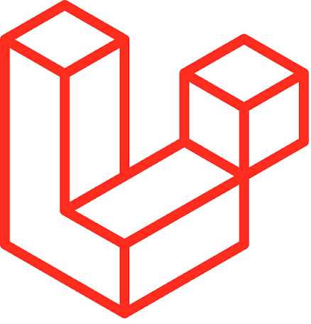

TechNova
Sistema de gestão para vendas e controle de equipamentos de TI, com dashboard, relatórios e gerenciamento de produtos.
Ver código no GitHub →PORTFÓLIO • TECNOLOGIA • ARTE
Transformando ideias em soluções digitais com criatividade, lógica e propósito.
Conheça meu trabalho →CAPÍTULO I
Sou apaixonada por tecnologia, arte e por tudo que envolve criatividade e inovação.
Acredito que o código também pode ser uma forma de expressão. Para mim, tecnologia não precisa ser fria: ela pode ser humana, criativa e transformar ideias em experiências reais.
Como desenvolvedora de sistemas, gosto de aprender, experimentar novas ferramentas e transformar problemas em soluções digitais.
CAPÍTULO II
Sistema de gestão para vendas e controle de equipamentos de TI, com dashboard, relatórios e gerenciamento de produtos.
Ver código no GitHub →Plataforma que conecta pessoas a serviços locais, facilitando o acesso a profissionais e fortalecendo a comunidade.
Ver protótipoMuseu online autoral que une tecnologia e arte, transformando a essência da natureza em uma experiência digital visual, interativa e imersiva.
Ver código no GitHub →Aplicação web que ajuda autônomos e freelancers a descobrir quanto cobrar por seus serviços, calculando preço mínimo, recomendado e premium a partir de custos, tempo e metas.
CAPÍTULO III
Aqui estão algumas das tecnologias que utilizo no meu dia a dia para desenvolver projetos incríveis:
 Python
Python
 Django
Django
 HTML5
HTML5
 CSS3
CSS3
 JavaScript
JavaScript
 Bootstrap
Bootstrap
 MySQL
MySQL

Laravel GitHub
GitHub
Código também
é arte!
♡
CAPÍTULO IV
Desenvolvedora Fullstack com atuação destacada no desenvolvimento Backend. Experiência na manutenção, refatoração e implementação de melhorias contínuas em sistemas legados e aplicações em produção. Atuação no ecossistema PHP utilizando o framework Laravel no Backend, aliada à criação de interfaces dinâmicas e responsivas no Frontend com JavaScript e Bootstrap. Foco na otimização de código, resolução de gargalos, manutenção da estabilidade do sistema e entrega de soluções eficientes para a infraestrutura de TI do hospital.
Graduação em andamento com foco em Lógica e Práticas de Programação (Python e Java), Banco de Dados, Ciência de Dados e Gestão Ágil de Projetos. Experiência no desenvolvimento de projetos práticos e pessoais, prototipagem de interfaces (Figma) e análise de dados (Power BI).
Atuação no suporte às rotinas do Departamento Pessoal, com foco em automação de envio de documentos, atualização de base de dados de colaboradores, elaboração de planilhas de benefícios com fórmulas e auditoria de documentações legais.
ÚLTIMO CAPÍTULO
Estou sempre aberta a novas oportunidades, projetos, parcerias e conversas sobre tecnologia e criatividade.
Entre em contato →